警告Work-in-progress 🚧
You are reading the work-in-progress first edition of Causal Inference in R. This chapter is actively undergoing work and may be restructured or changed. It may also be incomplete.
Missingness and measurement · 原书逐章中译
来源：Malcolm Barrett、Lucy D’Agostino McGowan、Travis Gerke，Causal Inference in R · Missingness and measurement。 本页为中文翻译；原书代码块、公式、图表交叉引用和引用键均按原文保留。统计图在网页渲染时由 R 代码生成，静态插图直接引用原文件。 原书仓库采用 CC BY-NC-SA 4.0；代码采用 MIT 许可。请遵守原许可证并注明作者。
You are reading the work-in-progress first edition of Causal Inference in R. This chapter is actively undergoing work and may be restructured or changed. It may also be incomplete.
缺失数据和测量不准确是大多数真实数据集都会遇到的问题，并且会影响描述、预测和因果推断这三类分析。 和分析本身一样，即使使用相同的工具（如多重插补）来处理，缺失和测量错误在这三类分析中的影响也各不相同。 在最好的情况下，缺失和测量不准确会降低样本的精确性并引入偏倚；在最坏的情况下，它们会造成无法解决的选择偏倚，使你得到完全错误的答案。 本章将探讨在存在缺失和测量不准确时，因果分析如何产生偏倚，以及（如果可能）如何处理这些问题。
人们经常指出，因果推断从根本上可以被看作一个缺失数据问题；毕竟，我们希望比较反事实状态，而事实世界之外的所有这些状态都是缺失的。 把因果推断看作缺失问题在哲学上很有趣，也把两个统计学领域的方法联系了起来。 这里我们考虑反向的命题：缺失和测量误差是因果推断问题。
到目前为止，我们在DAG中做了一个很大的假设：纳入的变量确实就是数据中的变量。 换句话说，我们假设数据被完整且无误地测量。 这个假设几乎从来都不成立。 让我们用因果图考察几个情景，以理解测量不准确和缺失的影响。
如果 x 部分缺失而 y 没有缺失，那么测量 y 的均值时可以使用比测量 x 均值更大的样本量。 但是，对于联合参数（如回归系数），只能利用 x 和 y 都完整的观测来计算。 R中的许多工具（如 lm()）默认会悄悄删除必要变量中存在缺失的行。
只使用所需变量都完整的观测，有时称为完整案例分析（complete-case analysis），这也是我们到目前为止在本书中采用的方法。
TouringPlans数据中的大多数变量都是完整的，而且很可能测量得很准确（例如，票务季节和历史天气都测量得很好）。 其中一个同时存在缺失和测量误差的变量，是游乐设施的实际等待时间。 如果你还记得，这些数据依赖人们排队：可能是报告自己经历的数据使用者，也可能是受雇排队并报告等待时间的人。 因此，缺失主要取决于是否有人在那里测量等待时间。 有人测量时，测量值也很可能带有误差，而误差大小又可能取决于这个人是谁。 例如，迪士尼世界的游客估计等待时间并提交给TouringPlans，产生的数值可能比受雇留在队伍中计时的人误差更大。
下面我们分别讨论测量误差和缺失。
首先考虑测量误差。 在 图 69.1 中，我们把实际等待时间和公布的等待时间各表示两次：真实版本和测量版本。 测量版本受到两个变量的影响：真实数值，以及影响测量不准确的未知或未测量因素。 两个等待时间的测量不准确彼此独立。 为简单起见，我们从这个DAG中删去了混杂因素。
library(ggdag)
glyph <- function(data, params, size) {
# data$shape <- 15
data$size <- 5
ggplot2::draw_key_point(data, params, size)
}
show_edge_color <- function(...) {
list(
theme(legend.position = "bottom"),
ggokabeito::scale_edge_color_okabe_ito(
name = NULL,
breaks = ~ .x[!is.na(.x)]
),
guides(color = "none")
)
}
edges_with_aes <- function(..., edge_color = "grey85", shadow = TRUE) {
list(
if (shadow) {
geom_dag_edges_link(
data = \(.x) filter(.x, is.na(path)),
edge_color = edge_color
)
},
geom_dag_edges_link(
aes(edge_color = path),
data = \(.x) mutate(.x, path = if_else(is.na(to), NA, path))
)
)
}
ggdag2 <- function(
.dag,
...,
order = 1:9,
seed = 1633,
box.padding = 3.4,
edges = geom_dag_edges_link(edge_color = "grey85")
) {
ggplot(
.dag,
aes_dag(...)
) +
edges +
geom_dag_point(key_glyph = glyph) +
geom_dag_text_repel(
aes(label = label),
size = 3.8,
seed = seed,
color = "#494949",
box.padding = box.padding
) +
ggokabeito::scale_color_okabe_ito(
order = order,
na.value = "grey90",
breaks = ~ .x[!is.na(.x)]
) +
theme_dag() +
theme(legend.position = "none") +
coord_cartesian(clip = "off")
}
add_measured <- function(.df) {
mutate(
.df,
measured = case_when(
str_detect(label, "measured") ~ "measured",
str_detect(label, "wait") ~ "truth",
.default = NA
)
)
}
add_missing <- function(.df) {
mutate(
.df,
missing = case_when(
str_detect(label, "missing") ~ "missingness indicator",
str_detect(label, "wait") ~ "wait times",
.default = NA
)
)
}
labels <- c(
"actual" = "actual\nwait",
"actual_star" = "measured\nactual",
"posted" = "posted\nwait",
"posted_star" = "measured\nposted",
"u_posted" = "unknown",
"u_actual" = "unknown "
)
dagify(
actual ~ posted,
posted_star ~ u_posted + posted,
actual_star ~ u_actual + actual,
coords = time_ordered_coords(),
labels = labels,
exposure = "posted_star",
outcome = "actual_star"
) |>
tidy_dagitty() |>
add_measured() |>
ggdag2(color = measured, order = 6:7) +
theme(legend.position = "bottom") +
labs(color = NULL) +
theme(
legend.key.spacing.x = unit(4, "points"),
legend.key.size = unit(1, "points"),
legend.text = element_text(
size = rel(1.25),
margin = margin(l = -10.5, b = 2.6)
),
legend.box.margin = margin(b = 20),
strip.text = element_blank()
)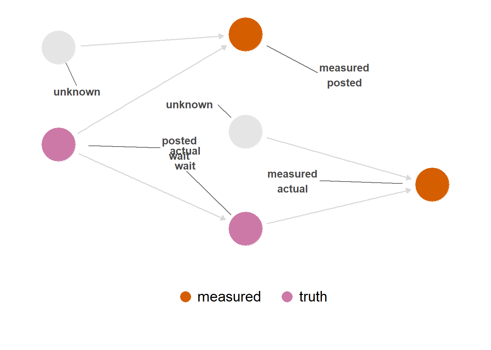
TouringPlans从Disney在网页上发布的信息中抓取公布的等待时间。 这里存在一个合理的测量不准确机制：Disney在线发布的时间可能与园区现场发布的时间不一致，或者TouringPlans获取数据的代码可能出错。 不过，假设这种误差很小是合理的。
另一方面，实际等待时间可能包含大量测量误差。 人们必须手工测量这段时间，这一过程天然会产生误差。 测量还可能取决于测量等待时间的人是否获得报酬。 大概来说，出于善意录入数据的人更可能提交近似的等待时间，而受雇者更可能精确计时。
因此，更新后的DAG可能如 图 69.2 所示。 这个DAG描述了 actual 测量误差的结构性原因；值得注意的是，这一结构与 posted 没有连接。 如果我们展示一个没有从 posted 指向 actual 的零DAG（ 图 69.3 ），就更容易看清楚。 公布时间与导致实际时间测量误差的机制没有连接。 换句话说，这种测量误差造成的偏倚不是由不可交换性引起的；它来自测量中的数值误差，而不是因果图中的开放路径。 这种误差的程度取决于测量版本与真实值的相关程度。
labels <- c(
"actual" = "actual\nwait",
"actual_star" = "measured\nactual",
"posted" = "posted\nwait",
"posted_star" = "measured\nposted",
"employed" = "employed\nby TP",
"u_actual" = "unknown"
)
dagify(
actual ~ posted,
posted_star ~ posted,
actual_star ~ u_actual + actual + employed,
coords = time_ordered_coords(),
labels = labels
) |>
tidy_dagitty() |>
add_measured() |>
ggdag2(color = measured, order = 6:7, box.padding = 3.7, seed = 123)
dagitty::dagitty(
'dag {
actual [pos="1.000,-2.000"]
actual_star [pos="2.000,-1.000"]
employed [pos="1.000,-1.000"]
posted [pos="1.000,2.000"]
posted_star [pos="2.000,1.000"]
u_actual [pos="1.000,1.000"]
actual -> actual_star
employed -> actual_star
posted -> posted_star
u_actual -> actual_star
}'
) |>
dag_label(labels = labels) |>
add_measured() |>
ggdag2(color = measured, order = 6:7, box.padding = 2.5)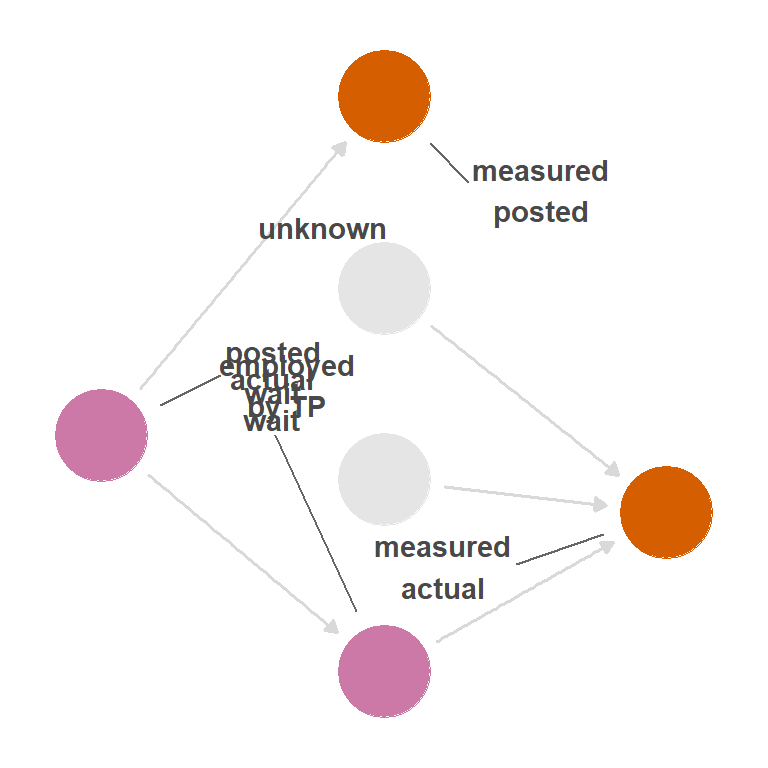
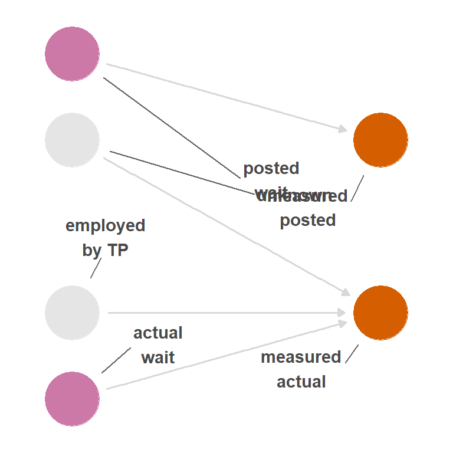
这种测量偏倚不同于混杂引起的不可交换性：我们分析的是 posted_measured 对 actual_measured 的效应，并把它作为 posted 对 actual 效应的代理。 结果的正确性完全取决于 actual_measured 对 actual 的近似程度。 如果换个角度，把测量变量视为研究中的原因和结果，就会看到我们实际上是在利用因果结构近似研究真实变量。 图 69.2 中的测量变量并不相互造成影响。 然而，如果计算它们之间的关系，它们会受到真实变量的混杂。 通常我们会尽量消除混杂，但这里反而利用这种混杂来近似真实变量之间的关系。 能否这样做，取决于除真实变量之外的可交换性，以及每个变量所含独立测量误差的大小（例如这里的 unknown）。
这有时称为独立的非差异性测量误差：误差不是结构性不可交换性造成的，而是 actual 和 posted 的观测值与真实值之间的差异造成的。
当相关性趋近于0时，对于所研究的关系，测量就变成了随机的。 这通常意味着，当变量带有独立测量误差时，即使真实值之间存在箭头，测量值之间的关系也会趋近于零。 这里，x 的系数应约为1，但随着随机测量误差加重，系数会越来越接近0。 由测量不准确引入的随机性（u）与 y 没有关系。
n <- 1000
x <- rnorm(n)
y <- x + rnorm(n)
# bad measurement of x
u <- rnorm(n)
x_measured <- 0.01 * x + u
cor(x, x_measured)[1] 0.02428lm(y ~ x_measured)
Call:
lm(formula = y ~ x_measured)
Coefficients:
(Intercept) x_measured
-5.26e-05 3.93e-02 并非所有随机测量不准确都会把效应推向零。 例如，对于包含两个以上类别的分类变量，测量不准确会改变各类别数值的分布（这有时称为分类变量的错分）。 即使是随机错分，有些关系会向零偏移，有些则会远离零，这仅仅是因为从一个类别移除的计数会进入另一个类别。 例如，如果随机混淆标签 "c" 和 "d"，它们的效应会彼此平均，使 c 的系数过大、d 的系数过小，而另外两个系数保持正确。
x <- sample(letters[1:5], size = n, replace = TRUE)
y <- case_when(
x == "a" ~ 1 + rnorm(n),
x == "b" ~ 2 + rnorm(n),
x == "c" ~ 3 + rnorm(n),
x == "d" ~ 4 + rnorm(n),
x == "e" ~ 5 + rnorm(n),
)
x_measured <- if_else(
x %in% c("c", "d"),
sample(c("c", "d"), size = n, replace = TRUE),
x
)
lm(y ~ x_measured)
Call:
lm(formula = y ~ x_measured)
Coefficients:
(Intercept) x_measuredb x_measuredc x_measuredd
0.993 0.989 2.452 2.408
x_measurede
4.047 一些研究者寄希望于随机测量误差会可预测地向零偏移，但这并不总是正确。 关于哪些情况下这一点不成立，见 Yland 等 (2022) 的更多讨论。
然而，假设有一个未知因素同时影响公布等待时间和实际等待时间的测量，如 图 69.4 所示。 除上述问题外，测量变量之间还会因混杂而产生不可交换性（ 图 69.5 ）。 这称为依赖的非差异性测量误差。
labels <- c(
"actual" = "actual wait",
"actual_star" = "measured\nactual",
"posted" = "posted wait",
"posted_star" = "measured\nposted",
"employed" = "employed by TP",
"u_actual" = "unknown"
)
depend_dag <- dagify(
posted_star ~ posted + u_actual,
actual_star ~ u_actual + actual + employed,
coords = time_ordered_coords(),
labels = labels,
exposure = "posted_star",
outcome = "actual_star"
)
depend_dag |>
tidy_dagitty() |>
add_measured() |>
ggdag2(color = measured, order = 6:7, box.padding = 3)
depend_dag |>
tidy_dagitty() |>
dag_paths() |>
ggdag2(
color = path,
edge_color = path,
box.padding = 2.35,
edges = edges_with_aes(shadow = FALSE)
) +
show_edge_color()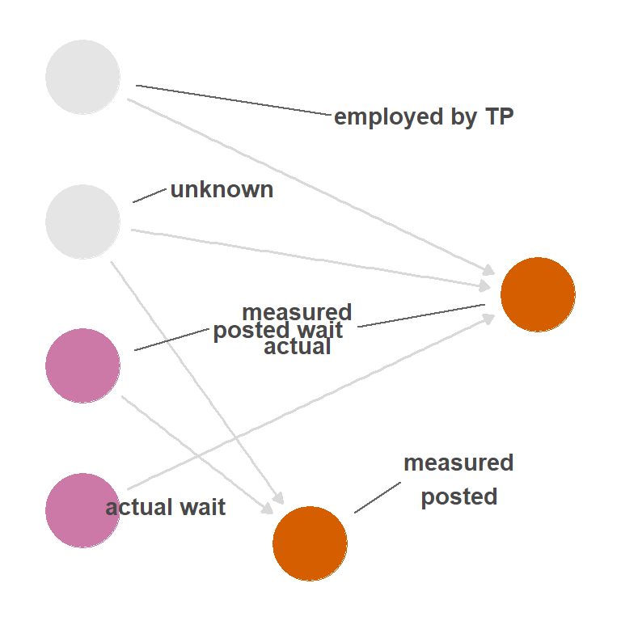
unknown to both measured variables, meaning that the way they are mismeasured is not independent. In other words, unknown is now a mutual cause of the mismeasured variables—a confounder.
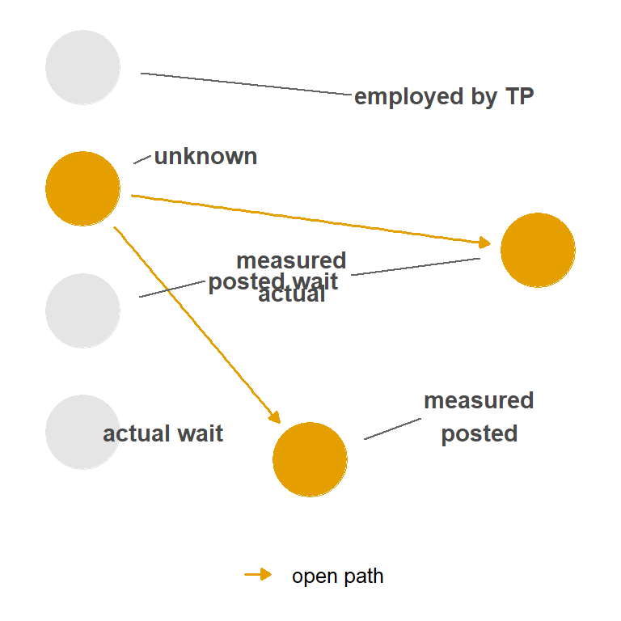
unknown.
当不可交换性与暴露、结局或两者有关时，称为差异性测量误差；它可以是依赖的，也可以是独立的。 让我们在 图 69.4 中加入一条从公布时间指向实际等待时间测量方式的箭头，这就是依赖的差异性测量误差（如果没有 图 69.4 中引入的路径，则是独立的差异性测量误差）。 图 69.6 展示了两条开放的后门路径：经过 unknown 的路径和经过 posted 的路径。
labels <- c(
"actual" = "actual wait",
"actual_star" = "measured\nactual",
"posted" = "posted wait",
"posted_star" = "measured\nposted",
"employed" = "employed by TP",
"u_actual" = "unknown"
)
depend_dag <- dagify(
posted_star ~ posted + u_actual,
actual_star ~ u_actual + actual + employed + posted,
coords = time_ordered_coords(),
labels = labels,
exposure = "posted_star",
outcome = "actual_star"
)
depend_dag |>
tidy_dagitty() |>
dag_paths() |>
ggdag2(
color = path,
edge_color = path,
seed = 234,
edges = edges_with_aes(edge_color = "grey90")
) +
show_edge_color() +
facet_wrap(~set) +
theme(strip.text = element_blank())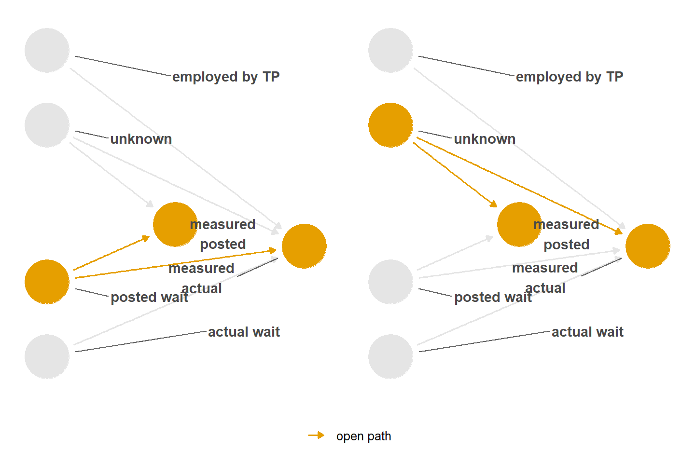
这些测量误差类型的名称是概念性的。 实际上只有两种偏倚：测量变量与真实值之间的数值不一致（独立的非差异性测量误差），以及不可交换性（其他三类测量误差）。 误差是否依赖或是否具有差异性，取决于不可交换性是否涉及暴露和/或结局。
依赖性/差异性的分类有一个不便之处：它掩盖了这两个偏倚来源可以、也确实会同时发生。 通常这些情形会一起出现（与真实值的数值不一致、涉及暴露或结局的开放后门路径，以及其他路径）。 此时，偏倚既来自测量变量与真实变量的相关程度，也来自结构性不可交换性。
在本例中，公布时间不太可能影响实际时间的测量质量，因此大概可以排除 图 69.6 中的额外箭头（不过下面会看到，它可能影响实际时间的缺失）。 公布时间的测量也很可能发生在实际时间的测量之前，因此不可能存在指向相反方向的箭头。
之所以会出现“结局影响暴露的测量”这类情况，是因为变量的测量时间顺序可能不同于它们所代表数值的发生顺序。 暴露可能早在结局之前发生，但测量它们的顺序可以是任意的。 按照时间顺序使用测量值，有助于避免某些测量误差，例如结局影响暴露测量的情况。 无论如何，在DAG中正确表示变量的发生和测量，有助于识别并理解这些问题。
测量不准确的混杂因素也会造成问题。 首先，如果混杂因素测量得很差，我们可能没有完全关闭后门路径，于是会残留混杂。 其次，当测量误差相对于结局具有差异性时，测量不准确的混杂因素还可能看起来像效应修饰因子。 通常，残留混杂造成的偏倚更严重，但暴露与测量不准确的混杂因素之间往往会出现一个虽小却显著的交互效应，如 表 69.1 所示。
n <- 10000
set.seed(1)
confounder <- rnorm(n)
exposure <- confounder + rnorm(n)
outcome <- exposure + confounder + rnorm(n)
true_model <- lm(outcome ~ exposure * confounder)
# mismeasure confounder
confounder <- if_else(
outcome > 0,
confounder,
confounder + 10 * rnorm(n)
)
mismeasured_model <- lm(outcome ~ exposure * confounder)library(gt)
library(broom)
pull_interaction <- function(mdl) {
mdl |>
tidy() |>
filter(term == "exposure:confounder") |>
mutate(
estimate = round(estimate, 3),
p.value = scales::label_pvalue()(p.value)
) |>
select(term, estimate, `p-value` = p.value)
}
map(
list("true" = true_model, "mismeasured" = mismeasured_model),
pull_interaction
) |>
list_rbind(names_to = "model") |>
gt()| model | term | estimate | p-value |
|---|---|---|---|
| true | exposure:confounder | 0.001 | 0.850 |
| mismeasured | exposure:confounder | 0.009 | <0.001 |
上文认为，公布的等待时间可能不会影响实际等待时间的测量。 然而，公布的等待时间可能影响实际等待时间的缺失。 如果公布的等待时间很长，某人可能不会排队，因而不会向TouringPlans提交实际等待时间。 为简单起见，我们删去测量误差的细节，并假设变量测量准确且没有混杂。
图 69.7 表示的情形与测量误差示例中的DAG略有不同。 对于某个变量，我们仍然使用两个节点，但其中一个表示真实值，另一个表示缺失指示变量，即该值是否缺失。 问题在于，我们实际上是在对是否观察到数据进行条件化。 我们总是在已有数据上进行条件化。 在缺失的情况下，通常指对完整观测进行条件化，例如只使用所需变量都完整的那部分数据。 在最理想的情况下，缺失与研究问题的因果结构无关，唯一的影响是样本量减少（从而精确性降低）。
然而，在 图 69.7 中，我们说 actual 的缺失与公布等待时间和某个未知机制有关。 未知机制是随机的，但与公布等待时间有关的机制不是，因为后者就是暴露。
labels <- c(
"actual" = "actual wait",
"actual_missing" = "missingness\nin actual",
"posted" = "posted wait",
"u_actual" = "unknown"
)
missing_dag <- dagify(
actual ~ posted,
actual_missing ~ u_actual + posted,
coords = time_ordered_coords(),
labels = labels,
exposure = "posted",
outcome = "actual"
)
missing_dag |>
tidy_dagitty() |>
add_missing() |>
ggdag2(color = missing, order = c(5, 3), box.padding = 3) +
theme(legend.position = "bottom") +
labs(color = NULL) +
theme(
legend.key.spacing.x = unit(4, "points"),
legend.key.size = unit(1, "points"),
legend.text = element_text(
size = rel(1.25),
margin = margin(l = -10.5, b = 2.6)
),
legend.box.margin = margin(b = 20),
strip.text = element_blank()
)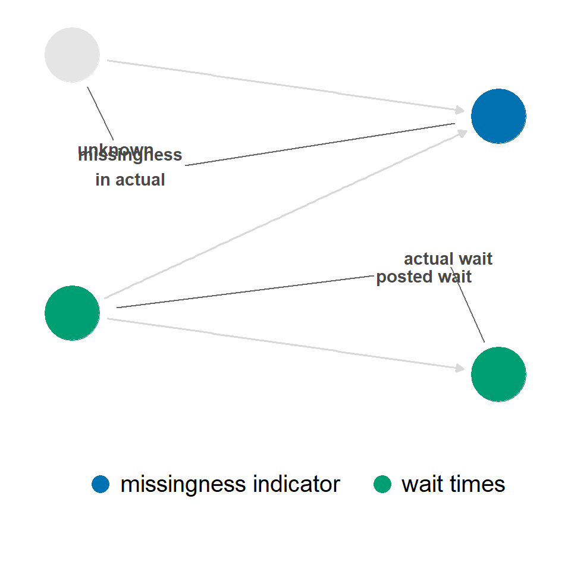
不过，在这个简单的DAG中，对缺失进行条件化不会在 actual 和 posted 之间打开后门路径。 （它确实会使 unknown 与 posted 之间的关系产生偏倚，但即使能够估计，我们也不关心这段关系。） 图 69.8 中唯一的开放路径是从 posted 到 actual 的路径。
missing_dag |>
tidy_dagitty() |>
add_missing() |>
dag_paths(adjust_for = "actual_missing") |>
ggdag2(
color = path,
edge_color = path,
box.padding = 3,
seed = 234,
edges = edges_with_aes(edge_color = "grey90")
) +
show_edge_color()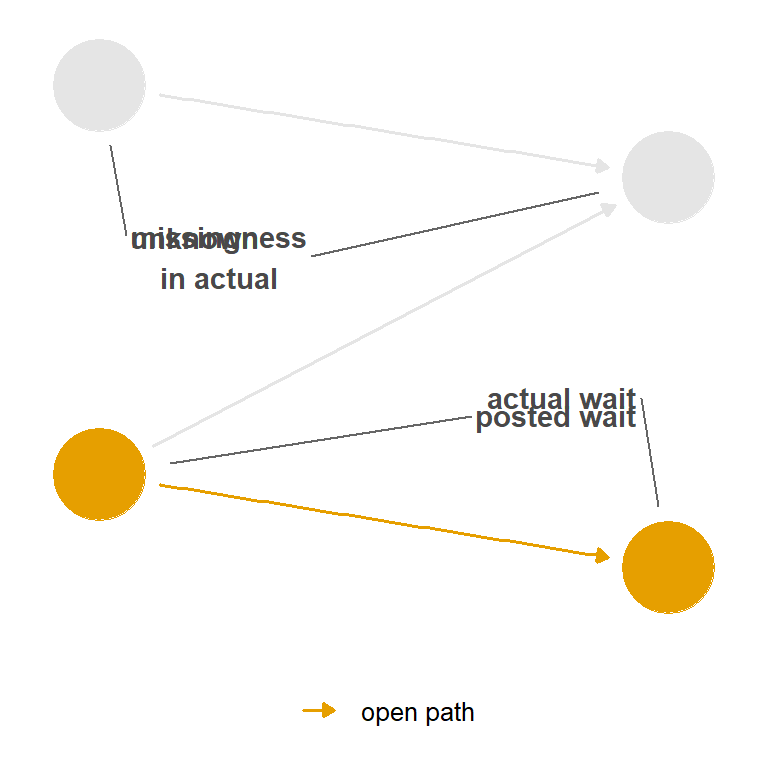
missing is a collider, stratifying on it does not open a backdoor path between the exposure and outcome.
由于不存在可交换性问题，我们仍然应该能够估计因果效应。 不过，缺失仍会影响分析。 本例中的因果效应是可恢复的；使用完整案例分析仍可无偏地估计它。 但是，因为只使用完整观测，样本量较小，精确性也会降低。 我们还无法正确估计实际等待时间的均值，因为实际等待时间会按公布等待时间系统性缺失。
actual 的缺失与其自身数值有关，这是否可行？ 实际等待时间可能短到乘客来不及录入，也可能长到他们决定离开队伍。 图 69.9 描绘了这样的关系。
当缺失是碰撞点时，对它进行条件化可能产生偏倚。 在这种情况下，实际等待时间是否被测量，是实际等待时间和公布等待时间的共同后代。 对它进行条件化会打开一条后门路径，造成不可交换性，如 图 69.10 所示。 在这种情况下，没有办法关闭因条件化缺失而打开的后门路径。
labels <- c(
"actual" = "actual wait",
"actual_missing" = "missingness\nin actual",
"posted" = "posted wait",
"u_actual" = "unknown"
)
missing_dag <- dagify(
actual ~ posted,
actual_missing ~ u_actual + actual + posted,
coords = time_ordered_coords(),
labels = labels,
exposure = "posted",
outcome = "actual"
)
missing_dag |>
tidy_dagitty() |>
add_missing() |>
ggdag2(color = missing, order = c(5, 3))
missing_dag |>
tidy_dagitty() |>
add_missing() |>
dag_paths(adjust_for = "actual_missing") |>
ggdag2(
color = path,
edge_color = path,
seed = 234,
edges = edges_with_aes(edge_color = "grey90")
) +
show_edge_color() +
facet_wrap(~set) +
expand_plot(expand_x = expansion(c(0.2, 0.2))) +
theme(strip.text = element_blank())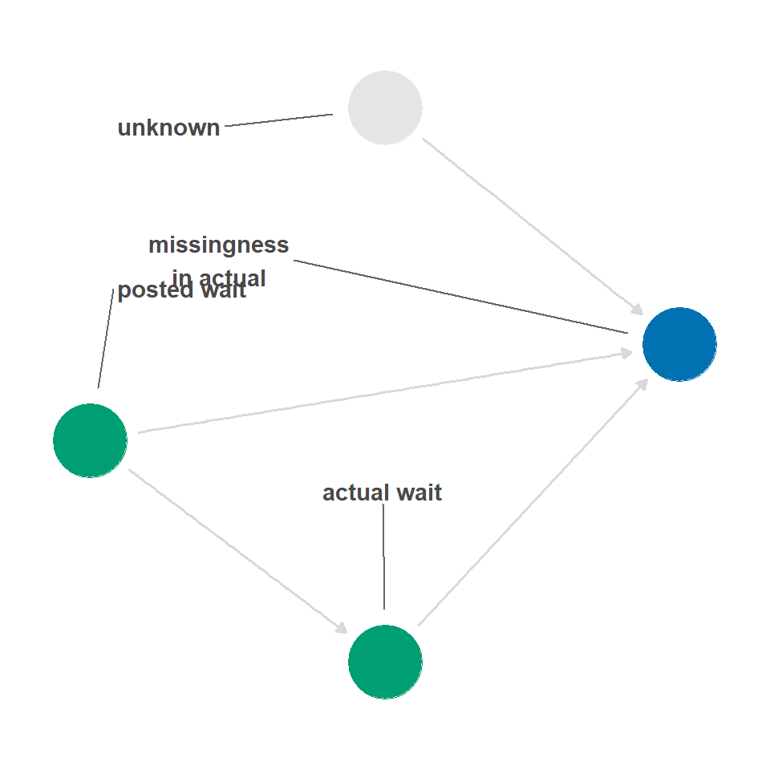
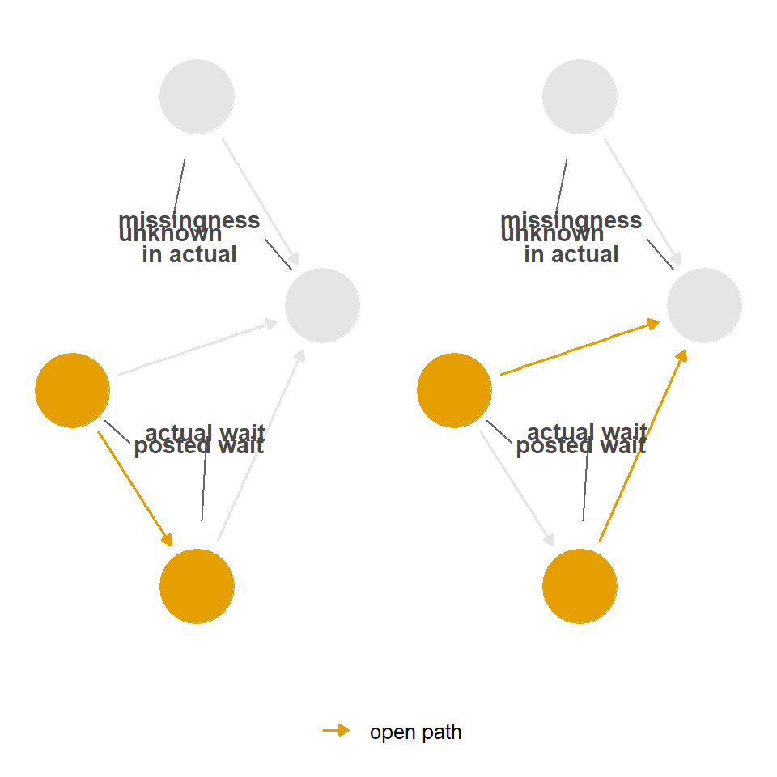
我们能够恢复哪些效应，比单纯确定后门路径更复杂。 没有后门路径时，我们可以计算因果效应，但可能无法计算暴露或结局的均值等其他统计量。 当对缺失进行条件化打开后门路径时，有时可以将其关闭（从而估计因果效应），有时则不能。
考虑 图 69.11 中的DAG，其中 a 是 actual，p 是 posted，u 是 unknown，m 是 missing。 每个DAG都表示一种简单但不同的缺失结构。
library(patchwork)
define_dag <- function(..., tag, title) {
dagify(
...,
coords = time_ordered_coords(),
exposure = "p",
outcome = "a"
) |>
ggdag(size = 0.7) +
labs(title = paste0(tag, ": ", title)) +
theme_dag() +
theme(plot.title = element_text(size = 12)) +
expand_plot(expansion(c(0.4, 0.4)), expansion(c(0.4, 0.4)))
}
dag_1 <- define_dag(
a ~ p,
m ~ u,
tag = "1",
title = "`actual` is missing"
)
dag_2 <- define_dag(
a ~ p,
m ~ u + p,
tag = "2",
title = "`actual` is missing"
)
dag_3 <- define_dag(
a ~ p,
m ~ u + a,
tag = "3",
title = "`actual` is missing"
)
dag_4 <- define_dag(
a ~ p,
m ~ u + p,
tag = "4",
title = "`posted` is missing"
)
dag_5 <- define_dag(
a ~ p,
m ~ u + a,
tag = "5",
title = "`posted` is missing"
)
(dag_1 + dag_2 + dag_3) / (plot_spacer() + dag_4 + dag_5)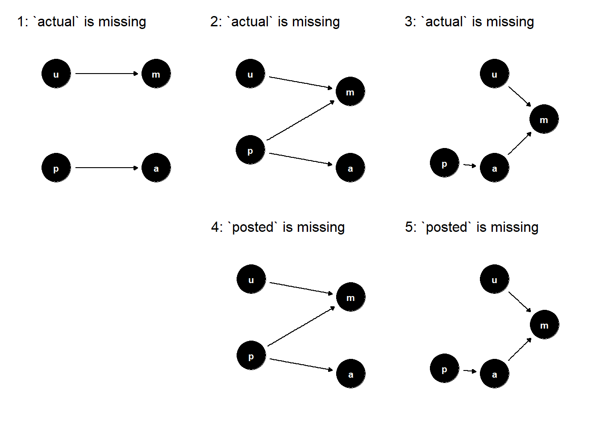
a is actual, p is posted, u is unknown, and m is missing. Each DAG represents a slightly different missingness mechanism. In DAGs 1-3, the actual wait time values have missingness; in DAGs 4-5, some posted wait times are missing. The causal structure of missingness impacts what we can estimate.
图 69.12 展示了从这些DAG模拟数据得到的 posted 和 actual 均值，以及 posted 对 actual 的估计因果效应。 没有任何缺失时，当然可以估计这三者。 对于DAG 1，也可以估计三者，但缺失使样本量减少，因此精确性更差。 对于DAG 2，可以计算 posted 的均值和因果效应，但不能计算 actual 的均值。 对于DAG 3，连因果效应也无法计算。 在DAG 4中，可以计算 actual 的均值和因果效应，但不能计算 posted 的均值；在DAG 5中，只能计算 actual 的均值。
set.seed(123)
posted <- rnorm(365, mean = 30, sd = 5)
# create an effect where an hour of posted time creates 50 min of actual time
coef <- 50 / 60
actual <- coef * posted + rnorm(365, mean = 0, sd = 2)
posted_60 <- posted / 60
missing_dag_1 <- rbinom(365, 1, 0.3) |>
as.logical()
missing_dag_2 <- if_else(posted_60 > 0.50, rbinom(365, 1, 0.95), 0) |>
as.logical()
missing_dag_3 <- if_else(actual > 22, rbinom(365, 1, 0.99), 0) |>
as.logical()
# the same structure, but it's `posted` that gets the resulting missingness
missing_dag_4 <- missing_dag_2
missing_dag_5 <- missing_dag_3
fit_stats <- function(
dag,
actual,
posted_60,
missing_by = NULL,
missing_for = "actual"
) {
if (!is.null(missing_by) && missing_for == "actual") {
actual[missing_by] <- NA
}
if (!is.null(missing_by) && missing_for == "posted") {
posted_60[missing_by] <- NA
}
t_actual <- t.test(actual)
t_posted <- t.test(posted_60 * 60)
mdl <- lm(actual ~ posted_60)
mdl_confints <- confint(mdl)
tibble(
dag = dag,
mean_actual_estimate = as.numeric(t_actual$estimate),
mean_actual_lower = t_actual$conf.int[[1]],
mean_actual_upper = t_actual$conf.int[[2]],
mean_posted_estimate = as.numeric(t_posted$estimate),
mean_posted_lower = t_posted$conf.int[[1]],
mean_posted_upper = t_posted$conf.int[[2]],
coef_60_estimate = coefficients(mdl)[["posted_60"]],
coef_60_lower = mdl_confints[2, 1],
coef_60_upper = mdl_confints[2, 2]
) |>
pivot_longer(
cols = -dag,
names_to = c("stat", ".value"),
names_pattern = "^(.*)_(estimate|lower|upper)$"
)
}
dag_stats <- bind_rows(
fit_stats("No missingness", actual, posted_60),
fit_stats("DAG 1", actual, posted_60, missing_by = missing_dag_1),
fit_stats("DAG 2", actual, posted_60, missing_by = missing_dag_2),
fit_stats("DAG 3", actual, posted_60, missing_by = missing_dag_3),
fit_stats(
"DAG 4",
actual,
posted_60,
missing_by = missing_dag_4,
missing_for = "posted"
),
fit_stats(
"DAG 5",
actual,
posted_60,
missing_by = missing_dag_5,
missing_for = "posted"
),
)
dag_stats |>
mutate(
true_value = if_else(
dag == "No missingness",
"True value",
"Observed value"
),
dag = factor(dag, levels = c(paste("DAG", 5:1), "No missingness")),
stat = factor(
stat,
levels = c("mean_posted", "mean_actual", "coef_60"),
labels = c("Mean of Posted", "Mean of Actual", "Causal effect")
)
) |>
ggplot(aes(color = true_value)) +
geom_point(aes(estimate, dag)) +
geom_segment(aes(
x = lower,
xend = upper,
y = dag,
yend = dag,
group = stat
)) +
facet_wrap(~stat, scales = "free_x") +
labs(y = NULL, color = NULL)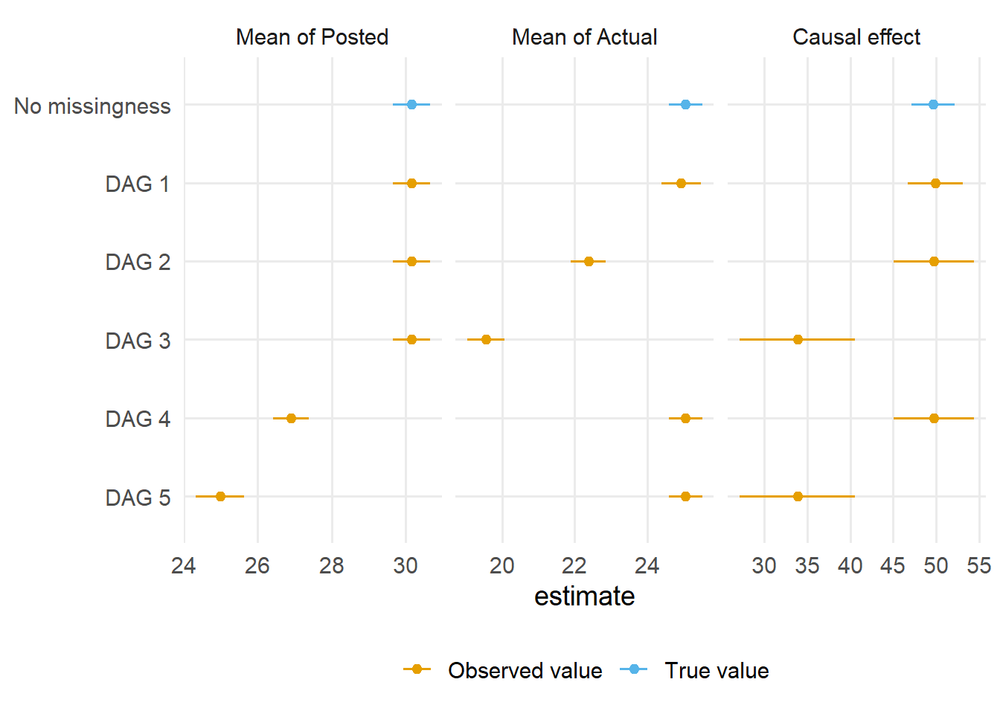
关于不同缺失结构下哪些效应可以恢复， Moreno-Betancur 等 (2018) 提供了全面综述。
与测量误差一样，因果模型中的混杂因素也可能造成实际等待时间缺失，例如季节或温度影响TouringPlans是否派人进行测量。 在这些数据中，所有混杂因素都被观测到，但混杂因素缺失会同时造成残留混杂，以及对完整案例进行分层所导致的选择偏倚。
在统计学家不擅长命名的悠久传统中，你还会经常看到人们用完全随机缺失、随机缺失和非随机缺失来讨论缺失。
在因果模型中，可以通过缺失的因果结构，以及数据中与该结构相关的变量和值是否可用，来解释这些概念。
x 的值越高，x 越可能缺失。 按定义，我们没有这些信息，因为它们是缺失的。这些术语并不总能告诉你下一步该做什么，因此我们会避免使用它们，而改为明确描述缺失的生成过程。
测量误差算不算缺失，因为我们缺失了真实值？ 缺失算不算测量误差，因为我们把一些值错误地测量成了 NA？ 我们用不同结构呈现了这两个问题：测量误差表示为计算代理变量的因果效应，缺失表示为在缺失条件下计算真实变量的因果效应。 这两种结构更清楚地揭示了两种情形中产生的偏倚。 不过，从另一个角度思考也会有帮助。 例如，把测量误差看作缺失问题，就可以使用多重插补等技术来处理它。 当然，我们经常同时遇到两者，因为一些观测缺失数据，而另一些观测虽然存在数据却测量不准确。
现在讨论一些用于处理测量误差和缺失的分析技术，以纠正这些DAG中出现的数值问题和结构性不可交换性。 在?sec-sensitivity中，我们还会讨论缺失和测量误差的敏感性分析。
有时，对于一部分观测，我们拥有某个变量测量得较为准确的版本；而对于数据集中更大比例的观测，则只有测量误差更大的版本。 有时人们将前者称为验证集。 在这种情况下，可以使用一种称为回归校准的简单方法，根据测量较准确版本已有的取值，预测数据集中更多观测对应的该版本取值。 该技术名称指的是：给定你所拥有的、测量较准确版本的那部分取值，对你观测得更多的那个变量版本进行重新校准。 除此之外，它本质上只是一个预测模型，其中包含你拥有更多观测值的变量版本，以及你认为对测量过程至关重要的其他变量。
如我们所知，实际等待时间存在大量缺失。 如果把公布的等待时间视为实际等待时间的代理变量，结果会怎样？ 在这种情况下，我们可以重新分析 Extra Magic Morning 对实际等待时间校准版本的影响。
首先，我们将使用 wait_minutes_posted_avg 拟合模型，以预测 wait_minutes_actual_avg。 然后，我们不再使用 wait_minutes_posted_avg，而是在其位置使用该模型得到的校准值。
拟合回归校准模型时，必须确保后续模型中的所有变量都以相同形式纳入（例如，如果最终模型中的某个混杂因子使用样条拟合，那么校准模型中也必须使用样条拟合这个混杂因子）。
library(splines)
library(touringplans)
library(broom)
calib_model <- lm(
wait_minutes_actual_avg ~
wait_minutes_posted_avg *
wait_hour +
park_extra_magic_morning +
park_temperature_high +
park_close +
park_ticket_season,
data = seven_dwarfs_train_2018
)
seven_dwarves_calib <- calib_model |>
augment(newdata = seven_dwarfs_train_2018) |>
rename(wait_minutes_posted_calib = .fitted)使用 IPW 估计量拟合该模型后，得到的效应为 4.91；与在第 拟合加权结局模型中使用未经校准的 wait_minutes_posted_avg 时看到的数值相比，该效应略有减弱。
另一种方法是插补这些值。 在 wait_minutes_actual_avg 可用时，我们使用它。 如果它是 NA，则使用校准值。 实际上，这与上面的校准模型相同，但我们不是为所有观测提供校准值，而只对验证集中缺失的观测进行插补。 这种方法有时称为回归插补或确定性插补。 之所以称为确定性，是因为我们只是为每个缺失数据的观测提供一个预测值，并将其视为固定值，而不是加入任何变异性（接下来我们将看到一种随机插补方法，其中会引入一定的变异性）。
seven_dwarves_reg_impute <- calib_model |>
augment(newdata = seven_dwarfs_train_2018) |>
rename(wait_minutes_actual_impute = .fitted) |>
# fill in real values where they exist
mutate(
wait_minutes_actual_impute = coalesce(
wait_minutes_actual_avg,
wait_minutes_actual_impute
)
)使用 IPW 估计量拟合该模型后，得到的效应为 6.49。
回归校准模型会将不确定性引入校准变量的估计值。 在进行回归校准或插补时，务必在 Bootstrap 中包含该模型的拟合过程，以获得正确的标准误。
回归校准通过使用单个模型预测取值，并将这些预测值代入分析，为处理测量误差和缺失提供了一种直接方法。 然而，这种代入方法通常效率较低。 如果我们正确估计不确定性（例如，同时对校准模型和结局模型进行 Bootstrap），最终通常会得到较宽的置信区间，这反映出我们依赖了单个插补值。
多重插补（MI）通常是更高效的替代方法。 MI 不会为缺失值生成一个“最佳猜测”，而是从一个分布中抽取预测值，从而捕捉缺失数据中固有的不确定性。 这一过程能够更好地估计汇总统计量（如插补变量的均值）和下游条件效应（如插补变量出现在结局模型中时的处理效应）。 通过这一过程，我们将生成多个插补数据集。 默认情况下通常使用 5 次插补，但如果数据中有较大比例缺失，可能需要更多次插补才能得到稳定结果。 一个常见经验法则是，插补次数应大致与不完整病例的百分比相匹配。
在因果分析中使用 MI 时，有几个关键的建模注意事项：
在典型的因果分析中，我们按以下步骤进行：
分别对 \(m\) 个插补数据集完成分析后：
设：
然后，总方差为：
\[ T = \bar{U} + \left(1 + \frac{1}{m}\right) B \]
汇总估计值的标准误为 \(\sqrt{T}\)，可用其构造置信区间或进行假设检验。
这种方法同时考虑了插补和处理效应估计步骤中的不确定性。 当缺失影响处理分配或结局过程所涉及的变量时，这种方法尤其有帮助；在这些情况下，完整病例分析或单次插补可能产生有偏或效率较低的估计值。
在实践中，多重插补通常使用 MICE（Multivariate Imputation by Chained Equations，多变量链式方程插补）算法实现。该算法利用以其他变量为条件的模型，迭代地对每个含缺失值的变量进行插补。 在 R 中，我们通常使用 {mice} 包实现插补。
让我们使用与上面相同的例子，但这次不再只进行一次回归插补，而是进行 10 次随机（多重）插补。 首先，我们需要对数据进行插补。
library(mice)
seven_dwarfs_to_impute_data <- seven_dwarfs_train_2018 |>
mutate(park_ticket_season = as.factor(park_ticket_season)) |>
select(
park_date,
wait_minutes_actual_avg,
wait_minutes_posted_avg,
wait_hour,
park_temperature_high,
park_close,
park_ticket_season,
park_extra_magic_morning
)
predictor_matrix <- make.predictorMatrix(seven_dwarfs_to_impute_data)
# remove park date from imputation models
predictor_matrix[, 1] <- 0
# Impute data
seven_dwarfs_mi <- mice(
seven_dwarfs_to_impute_data,
m = 10, # we are doing 10 imputations
predictorMatrix = predictor_matrix,
method = "pmm", # predictive mean matching
seed = 1,
print = FALSE
)然后，我们可以使用 complete 函数将插补数据集收集到一个列表中：
seven_dwarfs_mi_data <- complete(seven_dwarfs_mi, action = "all")最后，让我们编写一个函数，在这些数据集上拟合 IPW 效应。 为了应用 Rubin 规则，我们希望保留处理效应以及标准误。
fit_ipw_effect <- function(
.fmla,
.data = seven_dwarfs,
.trt = "park_extra_magic_morning",
.outcome_fmla = wait_minutes_posted_calib ~ park_extra_magic_morning
) {
.trt_var <- rlang::ensym(.trt)
# fit propensity score model
propensity_model <- glm(
.fmla,
data = .data,
family = binomial()
)
# calculate ATE weights
.df <- propensity_model |>
augment(type.predict = "response", data = .data) |>
mutate(w_ate = wt_ate(.fitted, !!.trt_var, exposure_type = "binary"))
# fit outcome model
outcome_model <- lm(.outcome_fmla, data = .df, weights = w_ate)
# fit ipw effect
ipw_output <- ipw(propensity_model, outcome_model, .df)
return(c(
estimate = ipw_output$estimates$estimate,
std.err = ipw_output$estimates$std.err
))
}effect_mi_all <- map(
seven_dwarfs_mi_data,
~ fit_ipw_effect(
park_extra_magic_morning ~ park_temperature_high +
park_close +
park_ticket_season,
.outcome_fmla = wait_minutes_actual_avg ~ park_extra_magic_morning,
.data = .x |> filter(wait_hour == 9)
)
) |>
bind_rows()现在，我们有了一个数据框，其中包含每个插补数据集中的估计效应及其标准误。
effect_mi_all# A tibble: 10 x 2
estimate std.err
<dbl> <dbl>
1 6.24 4.61
2 -1.43 3.63
3 11.5 5.27
4 10.6 5.19
5 -1.96 4.07
6 1.36 4.18
7 -2.30 3.60
8 7.20 6.06
9 7.92 4.92
10 2.98 3.86为了获得最终效应，我们将对 estimate 列取平均；为了得到适当的标准误，我们将应用 Rubin 规则（详情见 Tip 69.1 ）。
effect_mi_all |>
summarise(
effect_mi = mean(estimate), # pooled estimate
u_bar = mean(std.err^2), # average within-imputation variance
b = var(estimate), # between-imputation variance
t_var = u_bar + (1 + 1 / n()) * b, # total variance
se_mi = sqrt(t_var) # pooled standard error
) |>
select(effect_mi, se_mi)# A tibble: 1 x 2
effect_mi se_mi
<dbl> <dbl>
1 4.21 7.14同样，与第 拟合加权结局模型中看到的结果相比，该效应有所减弱（不过标准误相当大，因此差异可能并无实际意义）。
缺失对结果的影响，以及完整病例分析和多重插补的作用，可能会非常违反直觉。 当你再加入测量误差和其他类型的偏倚时，几乎不可能进行推理。 部分解决办法是把一部分推理工作从大脑转移到计算机上。
我们建议写下你认为与你的研究问题相关的因果机制，然后使用模拟来探查不同策略。
与我们关于 DAG 的一般建议一样，如果你不确定正确的 DAG，应检查结果在不同设定下有何差异。